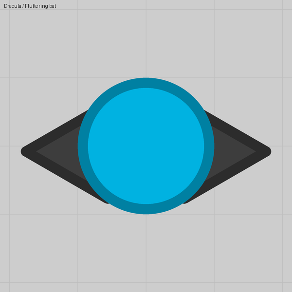
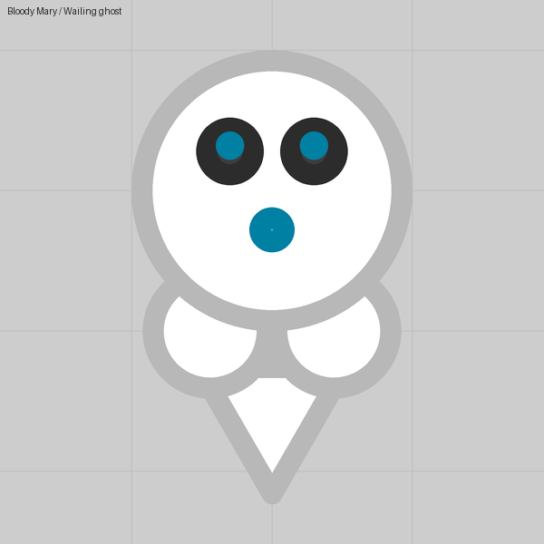
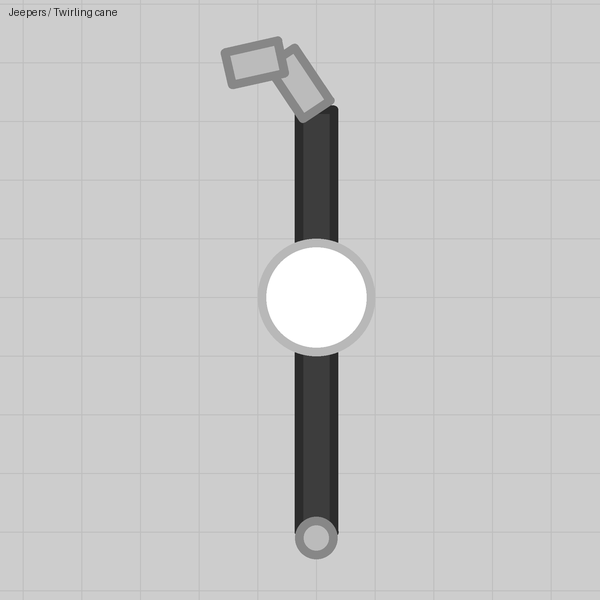
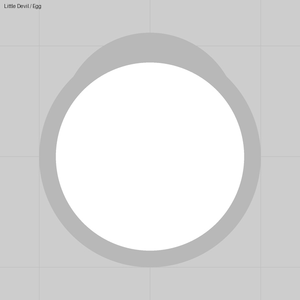

Lesson 13
Shots that are pictures
A projectile has its own layers, so a bullet can be a bat, an egg, a skull or a spiky star with an eye.
What you see
A cannon that throws a spinning five-point star with an eye on it. In the Halloween pack the same idea gives bats, cats, chickens, bones, skulls, eggs and little ghosts.
The trick
Open Projectiles and a projectile has the same panel a tank has: its own shape (Its own, with Sides and Drawn as a star), a Spin so it turns as it flies, and layers. Barrels, parts and auto turrets ride on it exactly as they ride on a body, and in that view the projectile's disc counts as a body of Size 50, however big the barrel fires it. Decorate it like a hull.
Numbers that matter
| Field | Value | Notes |
|---|---|---|
| Shape | Its own, Sides 5, star | "As usual for the kind" is round for a bullet, a triangle for a drone, a 3-point star for a trap |
| Spin | 0.15 | Rotation per tick; the stock missile spins at 0.1 |
| Part offsets | within 50 for things on the disc | Beyond 50 for things that stick out |
| Barrel Bullet size | 1 | The whole picture scales with it; a 2× shot is twice the picture |
Gotchas
- Only the disc, and up to three Collidable parts, actually hit anything. The rest is paint.
- Everything a shot carries is counted every time it is fired against the lobby's budget: a web of 24 rods costs 25 per shot (lesson 15).
- A barrel riding a projectile can fire only a plain projectile that carries nothing; give it a decorated one and the editor swaps in a plain shot on import.
- Up to 32 parts, 32 barrels and 8 turrets per projectile, but all of it counts toward the tank's 96 pieces.
Where we used it



